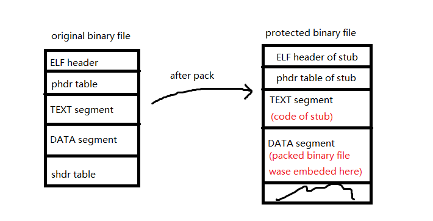
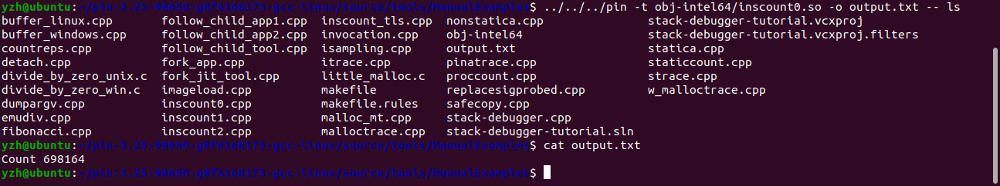
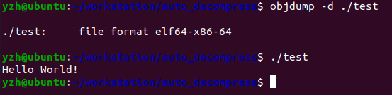
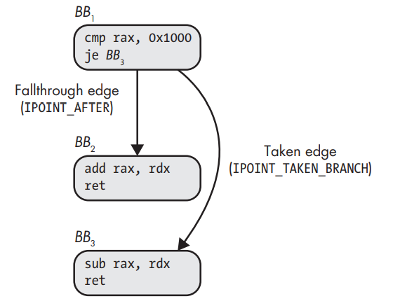
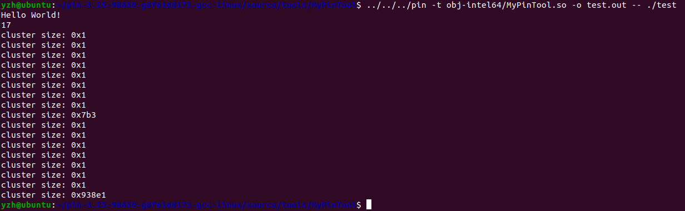

二进制加壳与脱壳
通常恶意软件作者为了避免恶意软件被二进制分析或者逆向研究，会对恶意软件进行加壳保护。
这部分的复现实验出了点问题，暂时搁置。
简单来讲，加壳就是将原来的可执行文件进行压缩或者加密，然后放在另一个可执行文件的数据段中，这个新的可执行文件将会在运行时对原来的可执行文件进行解压缩或者解密，这些操作都是在内存中进行的。然后再将其映射到内存中执行，整个过程都不会在磁盘上写入数据，所以也就无法被静态分析。
如下图所示：

虽然无法通过静态的方法分析原来的二进制文件，但是可以使用动态的方法进行分析。
注意到加壳后的可执行文件会先在内存中对原来的二进制文件进行解压或者解密后，再将其映射到内存并将控制权转移到二进制文件原来的入口点(Original Entry Point)。
因此，我们可以在加壳后的可执行文件运行时跟踪其内存读写的操作，进而获取到原来的二进制文件，然后再进一步进行二进制分析。
想要在程序运行时动态跟踪其内存读写操作，需要使用动态二进制插桩(Dynamic Binary Instrumentation, DBI)技术。
如何使用Pin
整个文档将会介绍使用动态二进制插桩平台(DBI Platform) Pin进行一个自动脱壳的实验。
Pin工具文档：Pin: Pin 3.25 User Guide
如果想要了解更多关于二进制插桩的内容，可以参考博客
DynamoRIO Tutorial
这篇博客介绍了DynamoRIO的使用方法，DynamoRIO和Pin一样是动态二进制插桩平台，它们的原理基本都是一样的，只是实现细节和优化方法存在差异。
和DynamoRIO一样，用户在定义DBI工具(client in DynamoRIO, pintools in Pin)时主要定义两部分代码：
插桩代码：决定在什么地方插入什么代码
分析代码：在插入点执行的代码
Pin支持多种细粒度的二进制插桩：
指令插桩：一次仅对二进制文件的一条指令进行检查并插桩，使用"INS_AddInstrumentFunction()"进行注册
基本块插桩：对一个基本块进行插桩，也就是为一次对一个基本块调用一次分析函数，使用"TRACE_AddInstrumentFunction()"进行注册。
Pin中并不能直接对基本块进行插桩，如果要对基本块插桩，就需要使用Trace插桩粒度，然后遍历Trace中的基本块进行分析和插桩
函数插桩：当可执行文件首次加载函数时，能够在DBI工具中检查并插桩整个函数的指令，使用"RTN_AddInstrumentFunction()"进行注册
IMAGE插桩：DBI工具在一个整个镜像(Image, an entire executable or library)首次被加载到内存时，对其进行检查并插桩，使用"IMG_AddInstrumentFunction()"进行注册
下面将使用一个简单的例子介绍如何使用Pin搭建DBI工具。
这个例子是官方文档中的例子，对一个程序所执行的指令进行计数。
1 2 3 4 5 6 7 8 9 10 11 12 13 14 15 16 17 18 19 20 21 22 23 24 25 26 27 28 29 30 31 32 33 34 35 36 37 38 39 40 41 42 43 44 45 46 47 48 49 50 51 52 53 54 55 56 57 58 59 60 61 62 63 64 65 66 #include <iostream> #include <fstream> #include "pin.H" using std::cerr;using std::endl;using std::ios;using std::ofstream;using std::string;static UINT64 icount = 0 ;VOID docount () { icount++; }VOID Instruction (INS ins, VOID* v) INS_InsertCall (ins, IPOINT_BEFORE, (AFUNPTR)docount, IARG_END);KNOB< string > KnobOutputFile (KNOB_MODE_WRITEONCE, "pintool" , "o" , "inscount.out" , "specify output file name" ) ;VOID Fini (INT32 code, VOID* v) setf (ios::showbase);"Count " << icount << endl;close ();INT32 Usage () "This tool counts the number of dynamic instructions executed" << endl;StringKnobSummary () << endl;return -1 ;int main (int argc, char * argv[]) if (PIN_Init (argc, argv)) return Usage ();open (KnobOutputFile.Value ().c_str ());INS_AddInstrumentFunction (Instruction, 0 );PIN_AddFiniFunction (Fini, 0 );PIN_StartProgram ();return 0 ;
首先需要介绍一下Pin中的Knob机制，这个机制允许用户定义的pintool添加一些命令行参数选项，比如在上面的例子中，就使用KNOB机制添加了一个输出文件名称的选项，使用-o选项指定输出文件名称。
上面例子中演示的pintool的主函数中就是先进行初始化(“PIN_Init()”)，开启输出文件，注册指令级插桩函数，注册用于运行结束时进行输出的终止函数(“PIN_AddFiniFunction()”)，然后启动目标函数(“PIN_StartProgram()”)。
如果想要了解Pin提供的这些接口的详细用法，可以在官网文档上找到。
这里定义的插桩过程比较简单，仅仅只是在每条指令之前插入一条调用"docount()"函数的指令，而这个函数不要传递参数。
如果想要给该函数传递参数，则需要使用Pin中的枚举类型 IARG_TYPE 进行传递，所有的参数都必须以IARG_END类型作为结束，即使上面的例子中没有传递参数，也需要使用IARG_END进行标示。
安装官网文档上的方法编译运行后的结果如下所示：

可以看到改工具能够成功对目标程序的指令数进行计数。
使用Pin实现自动脱壳
下面将演示如何通过自定义pintool实现由upx加壳工具加壳后的二进制的自动脱壳。
二进制加壳的具体原理是将原来的二进制文件压缩或者加密，然后放在另一个新的二进制文件的数据段中，这个新的二进制文件的功能仅仅是将原来的二进制文件进行解压缩或者解密，然后将解压缩或者解密后的二进制文件映射到内存中直接执行。所以想要对加壳后的二进制文件进行脱壳，需要对加壳后的二进制文件运行时的内存写和执行的行为进行跟踪。
UPX是一种常见的二进制加壳工具，使用命令"sudo apt install upx"即可完成安装。下面演示一个加壳后的二进制文件的反汇编结果：

可以看到使用objdump进行反汇编的话将无法获取任何可用的信息，但是加壳后的二进制文件依然能够正常执行。另外，使用strings工具检查加壳后的二进制文件的话将会发现UPX加壳工具的一些提示性的信息，而二进制文件原来的符号信息也被掩藏了。
所以这里的自动脱壳器就是指令级的插桩，然后检查每条指令的类型，判断其访存类型，而在Pin中可以使用API Pin: Inspection API for IA-32 and Intel® 64 instructions 来检查每条指令的相关信息。
在Pin中，对于一条写指令，只能在该指令执行之前才能够知道该指令写的地址 ，因此有一个插桩点必须是在该指令执行之前，用以记录该指令写的地址。但是在指令执行之前，也无法获取到该指令写的内容 ，所以这里还有一个插桩点就是该指令执行完成之后需要记录该指令写的内容。
内存写指令前面的插桩点很好解决，但是该指令之后的插桩点相对比较复杂，因为考虑到一点就是该指令指令完之后可能会直接跳转到别的地方，所以直接插在该指令之后的话，可能无法执行插入的指令，因此这里还需要跟踪程序的控制流。

如上图所示一条跳转指令会将控制流划分为跳转边(Taken edge)和直行边(Fallthrough edge)，而在Pin中，将非跳转指令后面的指令就是直行边 。所以想要保证每条插入在内存写指令之后的指令能够被执行，需要检查该指令的是否有直行边和跳转边，然后分别对这两条边进行插桩。
最后，自动脱壳器还需要检查原来的二进制文件的程序入口点(Original Entry Point, OEP)，其思路就是检查程序是否将控制流跳转到曾经写过的地址，并且最后的跳转通常是由间接跳转指令完成的。
代码如下：
1 2 3 4 5 6 7 8 9 10 11 12 13 14 15 16 17 18 19 20 21 22 23 24 25 26 27 28 29 30 31 32 33 34 35 36 37 38 39 40 41 42 43 44 45 46 47 48 49 50 51 52 53 54 55 56 57 58 59 60 61 62 63 64 65 66 67 68 69 70 71 72 73 74 75 76 77 78 79 80 81 82 83 84 85 86 87 88 89 90 91 92 93 94 95 96 97 98 99 100 101 102 103 104 105 106 107 108 109 110 111 112 113 114 115 116 117 118 119 120 121 122 123 124 125 126 127 128 129 #include <iostream> #include <fstream> #include <vector> #include <map> #include <algorithm> #include <stdint.h> #include "pin.H" typedef struct _memory_cluster_t _memory_cluster_t () : base_addr (0 ), size (0 ) {}_memory_cluster_t (uint64_t b, uint32_t s) : base_addr (b), size (s) {}uint64_t base_addr;uint32_t size;memory_cluster_t ;uint64_t saved_addr = 0 ;uint64_t , uint8_t > shadow_memory;memory_cluster_t > clusters;KNOB<std::string> dumped_file_name (KNOB_MODE_WRITEONCE, "pintool" , "o" , "dumped.out" , "the name of dumped file" ) ;bool in_cluster (uint64_t addr) bool result = false ;begin (), clusters.end (), memory_cluster_t m){if (addr >= m.base_addr && addr <= (m.base_addr + m.size))true ;return result;void set_cluster (memory_cluster_t &c, uint64_t addr) uint64_t base_addr = addr;uint32_t size = 1 ;while (shadow_memory.find (base_addr - 1 ) != shadow_memory.end ()) base_addr--;while (shadow_memory.find (base_addr + 1 ) != shadow_memory.end ())static void to_save_addr (uint64_t addr) static void to_save_value (uint32_t size) if (size > 0 )uint64_t addr = saved_addr;for (uint64_t i = addr; i < addr + size; i++)PIN_SafeCopy (&shadow_memory[i], (const void *)i, 1 );static void check_original_entry_point (uint64_t target_addr) memory_cluster_t c;if (!in_cluster (target_addr))set_cluster (c, target_addr);push_back (c);static void ins_instrument (INS ins, void *v) if (INS_IsMemoryWrite (ins))INS_InsertPredicatedCall (ins, IPOINT_BEFORE, (AFUNPTR)to_save_addr, IARG_MEMORYWRITE_EA, IARG_END);if (INS_HasFallThrough (ins))INS_InsertPredicatedCall (ins, IPOINT_AFTER, (AFUNPTR)to_save_value, IARG_MEMORYWRITE_SIZE, IARG_END);if (INS_IsValidForIpointTakenBranch (ins))INS_InsertPredicatedCall (ins, IPOINT_TAKEN_BRANCH, (AFUNPTR)to_save_value, IARG_MEMORYWRITE_SIZE, IARG_END);if (INS_IsIndirectControlFlow (ins) && INS_OperandCount (ins) > 0 )INS_InsertCall (ins, IPOINT_BEFORE, (AFUNPTR)check_original_entry_point, IARG_BRANCH_TARGET_ADDR, IARG_END);void fini (INT32 code, void *v) size () << "\n" ;begin (), clusters.end (),memory_cluster_t c){"cluster size: 0x" << std::hex << c.size << '\n' ;if (c.size > 0x1000 )uint32_t i;for (i = 0 ; i < c.size; i++)write ((char *)&shadow_memory[c.base_addr + i], sizeof (uint8_t ));close ();int main (int argc, char *argv[]) if (PIN_Init (argc, argv)) printf ("Usage: %s <packed file>" , argv[0 ]);return 0 ;open (dumped_file_name.Value ().c_str (), std::ios_base::binary);INS_AddInstrumentFunction (ins_instrument, 0 );PIN_AddFiniFunction (fini, 0 );PIN_StartProgram ();return 0 ;
这个实验暂时是失败的，最后一共得到17个memory_cluster，其大小分别如下：

大小只有0x1肯定不是我们要找的cluster，所以在另外两个cluster中找，但是将另外两个cluster分别dump下来后使用strings进行检查，都没有得到想要的结果。
这个实验暂时搁置。